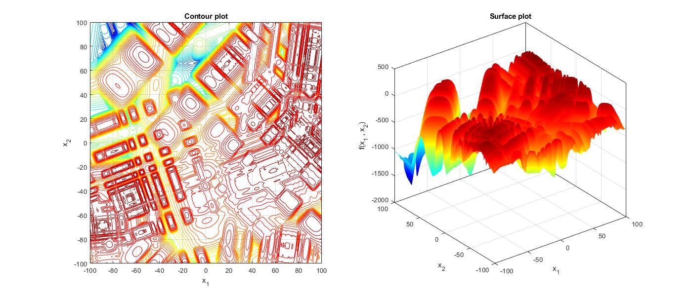

Guangdong Provincial Key Laboratory of Novel Security Intelligence Technologies, School of
Computer
Science and Technology, Harbin Institute of Technology and Peng Cheng Laboratory, Shenzhen
518055, China
Email: luowenjian@hit.edu.cn
Shengxiang Yang
Institute of Artificial Intelligence (IAI), School of Computer
Science and Informatics, De Montfort
University, Leicester LE1 9BH, United Kingdom
Email: syang@dmu.ac.uk
Background
Search space of many real-world optimization problems is dynamic in terms of the objective function, the
number of variables, and/or constraints. Optimization problems that change over time and need to be
solved online by an optimization method are referred to as dynamic optimization problems (DOPs). To
solve DOPs, algorithms not only need to find desirable solutions but also be able to react to the
environmental changes in a timely manner and find a new solution when the previous one becomes
suboptimal. In this competition, we focus on evolutionary dynamic optimization methods (EDOs) for
unconstrained single-objective continuous DOPs. EDOs are important class of algorithms as they form the
foundation for more complex methods, such as those used in robust optimization over time, as well as
large-scale and constrained dynamic optimization. This competition aims at providing a common platform
for fair and easy comparison of EDOs. The competition allows competitors to run their own EDO on the
problem instances generated by the generalized moving peaks benchmark (GMPB) with different
characteristics and levels of difficulty.
Generalized Moving Peaks Benchmark [1]
The landscapes generated by GMPB are constructed by assembling several promising regions with a variety
of controllable characteristics ranging from unimodal to highly multimodal, symmetric to highly
asymmetric, smooth to highly irregular, and various degrees of variable interaction and
ill-conditioning. An example of a 2-dimensional landscape generated by GMPB is shown in Figure 1.
For a detailed description of GMPB, the reader is referred to the competition support document
(download from here).
The MATLAB source code for the Generalized Moving Peaks Benchmark (GMPB) is accessible through
the EDOLAB platform and can be downloaded from EDOLAB's GitHub repository.
Researchers are
encouraged to utilize the guidelines in [2] to integrate their own algorithms into EDOLAB.

Figure 1: Contour and surface plots of a landscape generated by GMPB
×
Problem Instances
12 different problem instances with different characteristics are used in this competition. To generate
these problem instances, the participants need to set four parameters PeakNumber,
ChangeFrequency, Dimension, and ShiftSeverity in
“main.m” according to the values shown in Table 1.
Table 1: Parameter setting of the 12 problem instances used in this competition.
parameter
Problem instances
F1
F2
F3
F4
F5
F6
F7
F8
F9
F10
F11
F12
PeakNumber
5
10
25
50
100
10
10
10
10
10
10
10
ChangeFrequency
5000
5000
5000
5000
5000
2500
1000
500
5000
5000
5000
5000
Dimension
5
5
5
5
5
5
5
5
10
20
5
5
ShiftSeverity
1
1
1
1
1
1
1
1
1
1
2
5
RunNumber
31
EnvironmentNumber
100
Evaluation Criteria
Offline error is used as the performance indicator in this competition :
where `vecx^(∘"(t)")` is the global optimum position at the t-h environment, T is the number of
environments, 𝜗 is the change frequency, c is the fitness evaluation counter for each environment, and
`vecx^(**((t-1)ϑ+c))` is the best found position at the c-th fitness evaluation in the t-h
environment.
Offline error is the average of current error values over optimization process. In the source code, in
each
run, the values of the current errors are stored in “Problem.CurrentError” at the
end of each run, the offline error is obtained.
Rules
Participants are NOT allowed to change the random seed generators in the code.
Participants are NOT allowed to modify “BenchmarkGenerator.m” and
“fitness.m” files in the source
code.
Participants are NOT allowed to tune the parameters of their algorithm for individual problem
instance.
In other words, the values of the parameters of the algorithm must be the same for solving all
problem
instances.
The problem instances must be considered as complete blackboxes and the algorithms must NOT use any
of the internal parameters of GMPB.
The algorithm can be informed about the environmental changes. Consequently, participants do not
need to
use any change detection mechanism in their algorithms. Note that it is also accepted if a change
detection component is used.
Each participant can submit more than one algorithm.
Competitors can participate with either newly proposed algorithms (unpublished) or their previously
published algorithms.
Statistical analysis will be done to compare the results and rank them based on their win-loss in different instances.
Winners will be required to share their algorithm's source code for result verification. This code
will remain confidential and will not be published.
Submission instructions
For each algorithm, the competitors must provide a compressed folder (named as the algorithm's name)
which contains 13 files. The first file is a document containing the following information :
Title
Names, affiliations, and emails of participants
A short description of the algorithm, including the used optimizer (e.g., PSO or DE), how the
population is managed and controlled (e.g., bi-population, multi-population with fixed number of
sub-populations, or multi-population with clustering), and whether explicit memory (archive) is used
or
not.
The following Table 2 which shows the best, worst, average, median, and standard deviation of the
offline
error values obtained by 31 runs for each problem instance.
Table 2: The best, worst, average, median, and standard deviation of the
offline error values obtained by 31 runs for each problem instance.
Offline error
Problem instances
F1
F2
F3
F4
F5
F6
F7
F8
F9
F10
F11
F12
Best
Worst
Average
Median
Standard deviation
In addition, this folder also must contain 12 text files where each file contains the 31 offline error
values obtained by the algorithm in 31 runs for each problem instance. Each text file must be named
according to the corresponding problem instance (e.g., “F10.dat” which contains 31 entries obtained by
solving F10).
If you have any questions, please do not hesitate to contact Guoyu Chen
(email: chenguoyumail@163.com).
The following citation information should be used to cite the technical report of this
competition:
D. Yazdani, M. Mavrovouniotis, C. Li, Wenjian Luo, M. N. Omidvar, A. H. Gandomi, T. T. Nguyen,
J. Branke, X. Li, S. Yang, and X. Yao, "Competition on Dynamic Optimization Problems Generated
by Generalized Moving Peaks Benchmark (GMPB)," arXiv preprint arXiv:2106.06174, 2024.
Submit your files directly to Guoyu Chen (email to chenguoyumail@163.com), no later than 19 May 2025.